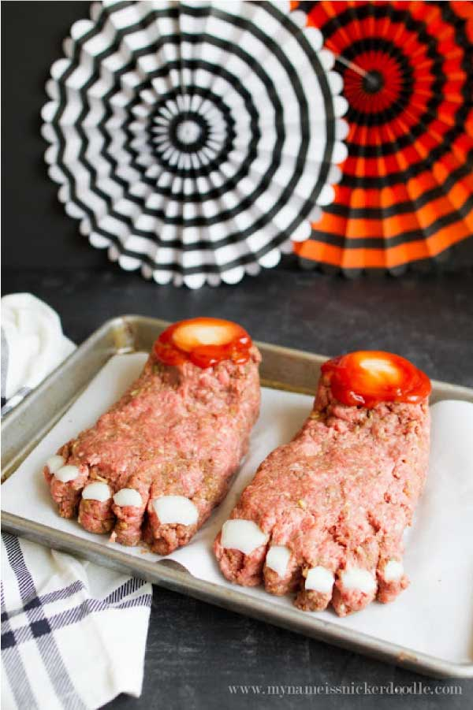

Foot Fetish Pie

Description
For you freaks (politicians) with a thing for toes.
Ingredients
- An unhealthy obsession with putting toes in your mouth
- Some kind of meat I guess.
- Maybe potatoes. Is this like a shephards pie dealie?
- Put whatever you want in it idrc.
Steps
- Uhh cook the stuff. Like the meat and stuff. Whatever else you decided to put in this weird thing. I dunno.
- Make it look like feet. Don't ask me how, you're the foot loon. You figure it out. Follow your creepy little heart.
- Et voila! A meal you can beat off into.